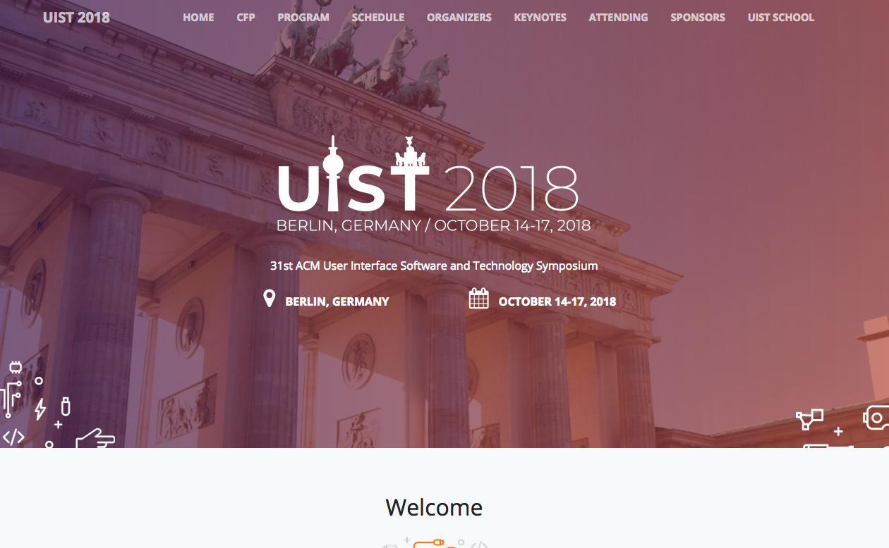
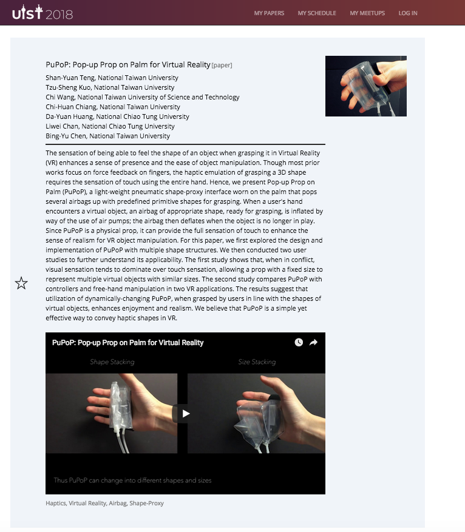

6.810 Engineering Interactive Technologies (fall 2020)
Homework: Find 5 Projects from ACM UIST 2018
Deadline (Sept 16, 2020, 1pm):
Fill out this Google Form.
Task
In this homework, you will go to the ACM UIST conference website and find your favorite five projects. You will then go into more detail with one of the five projects by reading the paper and reporting on the main contribution and technical implementation.
1) Go to the ACM UIST 2018 Conference Website
In particular, you want to go to the program schedule here.

2) Find your favorite 5 research projects from ACM UIST 2018
You need to look at the paper sessions. Not all sessions are paper sessions, there are opening remarks and keynotes as well, so just ignore these.
For each session you can see the paper titles + authors.

If you click on a paper, you get a 30 second video preview.
We recommend watching a bunch for these 30 second videos and then deciding on your top 5.
This is a great opportunity to see what in technical HCI is most interesting to you.

Once you have decided, paste the paper title + author list into the google form.
3) Select your favorite project out of the five
Next, select one of the five projects that has both software + hardware components. You are going to do a more in-depth search for this one next. Add your choice to the google form.
4) Use the ACM DL to find related work
Next, use the ACM Digital Library to find two papers that cite your favorite paper (i.e. that are newer than the paper you selected). Also list two papers from the same first or last author.
5) Read your selected paper and answer remaining Questions
Please look at the google form, it asks you about the main technical invention of the work, a short description how the technology works, an estimation how much it would cost to build it your self including a list of components with link and price, how much time you think it would take you to build it yourself, what limitations the work has and what you would do as future work based on what you learned.